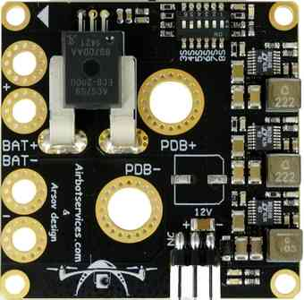
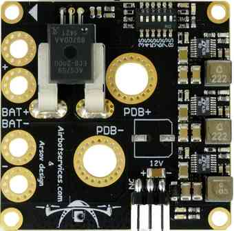

AirbotPower Power Module¶
This page explains how to set up the AirbotPower Power Module and AirbotPDB stackable companion power distribution board.
This power module is useful for higher power systems (battery voltage from 4S to 8S and currents from 90 amps to 150 amps). The board encapsulates all the wiring and complexity described in Powering the Autopilot) in a single, simple package.
Overview¶
The AirbotPower Power Module (and AirbotPDB stackable companion power distribution board) provides a reliable and simple way to power an autopilot and other UAV components.
 

{kind=link}
AirbotPower provides three power feeds: 2x 5.3V & 1x 12V (up to 3.5 amps each) and can supply main power to autopilot’s power port, backup power to the servo rail and power for an FPV system. It provides current and voltage measurements through the main power port, up to 150 amps and 8S.
The following sections provide an overview of the setup. For more detailed information about the benefits of this board and setup see:
AirbotPower Power Module (airbotservices store)
AirbotPower board (DIY Drones blog post)
Key Features¶
2 x 5.3 Volts power feeds up to 3.5 amps
1 x 12 Volts power feed up to 3.5 amps (requires >=4S batteries)
Equivalent of three L/C filters on each power feed
Equivalent of three ferrites on each power feed
Voltage spikes suppression with 5.6V Zener diode (5Watts) + Capacitor on autopilot servo rail
HALL EFFECT current measurement (ACS758) for currents to 150 amps
A dip-switch configurable 3S to 8S Voltage measurement
A primary DF13 6 position connector for direct plugging into autopilot power port
A redundant 5.3V servo connector for standard servo cabling into autopilot servo rail
A standard 12V servo connector output for powering FPV devices
Oversized double redundant parallel battery inputs (solder through pads, for 10 or 12AWG wires)
Modular design separating the Power functions and the distribution function in two boards : allows to retrofit any drone already assembled with an existing Power Distribution Board (PDB). Stackable optional AirbotPDB distributionBoard, via XT150 connectors (less than 3cm height with stacked optional PDB)
Large XT150 heavy duty connectors solder pads to either stack AirbotPDB or to link to an existing PDB. Flexibility to connect to PDB via connectors or soldered cables.
Overcurrent, ESD and shorts protections on all three BECs
No messy wiring & no cable fiddling thanks to a 6-pin DF13 output connector to connect the board to the autopilot’s 6-pin power port.
Board dimensions (W x D) : 50 x 50 mm. A very compact format using standard 45x45 mm screw holes spacing (M3)
Lightweight and clean surface mount design: 21 grams
Connecting to the Autopilot¶
Connecting the main power supply, backup power supply and servo rail “safety” connector, are shown below.

Note
A few practical guidelines:
Don’t use servos on the backup AUX 5.3V supply as they can supply just a few amps and too many servos might exceed this amperage.
At least one of the DIP switch switches MUST be switched ON towards the ON mark (or towards the battery number marks); In the first batch of boards, DIP switches labels have been printed in reverse order: 3S, 4S,…,7S, 8S should instead be read reversely 8S, 7S? …4S, 3S. Later batches will have their labels printed in the correct order.
On the bottom of the Power Board, there are some gold plated traces between the sensor and the 7mm holes and between BAT- and the PDB- . It is advised to add some solder on them for extreme currents. To do this you’ll need at least a 80W soldering iron and must use good solder with 2-2.5% non-corrosive flux. Higher power soldering iron leads to shorter heating time which is better for both the PCB itself and the components.
The board also comes with a Zener Diode 5.6V (5W) + capacitor and easy instructions to assemble them into an extra safety module that plugs on the autopilot’s servo rail. This is required on the autopilot’s servo rail to trim any short voltage spikes (above 5.6V) that would be fed back to the autopilot’’s servo rail from external devices & servos (possibly causing the autopilot to shut itself down).
{kind=link}
5.6V 5WZener+Cap module details: plastidip & heat shrink tubing¶
AirbotPDB Power Distribution Board¶
The AirbotPDB board (“10 solder pads” power distribution board) is stackable companion board (via XT150 connectors) that can optionally be used with AirbotPower.
{kind=link}
AirbotPDB Board¶
{kind=link}
AirbotPower PowerModule: Connectors for AirbotPDB¶
Setup through Mission Planner¶
Power Module Configuration in Mission Planner explains how to configure a Power Module and get low battery alerts from Mission Planner.
For this specific module, use the settings as shown in the diagram below (start with a “Voltage divider (calced)” value around 7.65):
{kind=link}
Mission Planner:Configuraton for the AirbotPower Power Module¶
The output of the ACS758 current sensor produces a voltage of +0,6V (offset) +20mV/A (i.e. set copter parameter “BATT_AMP_OFFSET” to a value of 0.6).